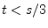
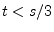
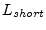
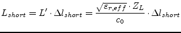
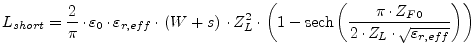

There is a similar simple approximation for a coplanar waveguide short-circuit, also given in [54]. The short circuit is inductive in nature.
The equivalent length extension  associated with the
fringing fields is
associated with the
fringing fields is
Equation (12.29) is valid when the metalization thickness
 does not become too large ().
does not become too large ().
The short end inductance  can be written in terms of the inductance per unit length and the wave resistance.
|  | (12.30) |
According to W.J.Getsinger [55] the CPW short-circuit inductance per unit length can also be modeled by
|  | (12.31) |
based on his duality [56] theory.